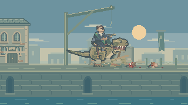
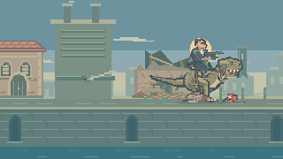
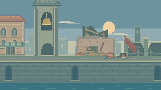
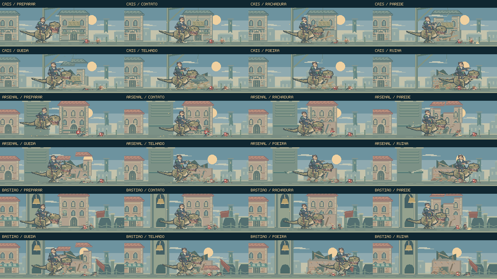

O golpe acontece.
O cenário responde.
A destruição ganhou peso e consequência: a alvenaria racha, a parede cede antes do telhado, os elementos próximos reagem com atraso e o local conserva os escombros. Cada rua tem uma resposta própria.
Jogar o encontroAssistir ao estudo visual- Contato
- Fratura
- Queda da parede
- Queda do telhado
- Assentamento
Três lugares, três reações.
Estudo de 16,1 segundos do renderizador do jogo, com câmeras e tempos escolhidos para inspeção. Sem áudio e sem o combate do primeiro plano; não é uma gravação jogada nem uma validação de dificuldade.
O peso vem do intervalo
O contato permanece visível por seis quadros antes da ruptura. Cinco partes de tamanhos diferentes se desprendem em momentos distintos. Paredes e telhas têm quedas próprias, com fragmentos menores que quicam e permanecem na rua.
O combate continua legível
As nuvens de poeira ficam baixas e se abrem em pequenos rastros. O efeito não cobre a tela. A entrada nas ruas e o enquadramento continuam governando as ações do fundo.

A carga também pesa.
O guindaste recebe a vibração do impacto. A corda rompe, recua e oscila até parar. A carga cai, sofre um pequeno rebote e abre as caixas, espalhando tábuas sobre o pavimento.
Os sons secundários agora acompanham os instantes de aterrissagem da parede, da carga e do telhado.
Uma pressão que se esgota.
No arsenal, a ruptura abre um trecho real do cano. O jato cresce rapidamente e perde força até se tornar um vazamento menor. O fundo mantém as vigas, a alvenaria exposta e a abertura escura atrás da fachada.


A reação percorre o lugar.
O sino se move como um pêndulo, com o badalo acompanhando o balanço. Uma fixação da faixa cede; a outra continua sustentando o tecido. Balanço, fumaça e poeira se dissipam em tempos diferentes.
O acabamento inclui soleiras, sombras de contato, juntas, madeira partida e telhas reconhecíveis na pilha final.
Do contato ao silêncio.

Prancha de direção em pixels nativos. A opção de movimento reduzido suprime tremores locais, aves e balanços decorativos; a mudança estrutural permanece visível.
Escopo desta rodada.
Alterações no cenário, na animação ambiental e nos sons de queda. A suíte de testes e a checagem de tipos não foram executadas nesta publicação rápida. A revisão visual usou os 24 quadros e a sequência acima; o estudo não comprova a experiência de combate.
Registro do estudo visual · Notas de implementação · Praça e expansão do cerco